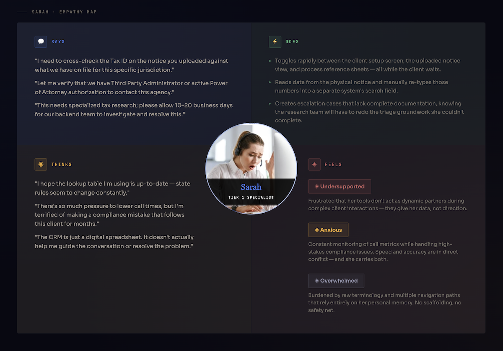
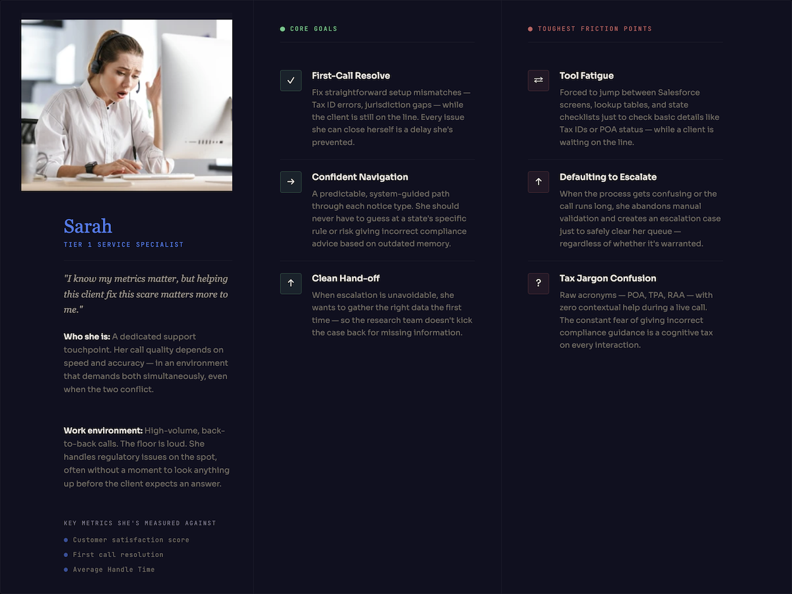
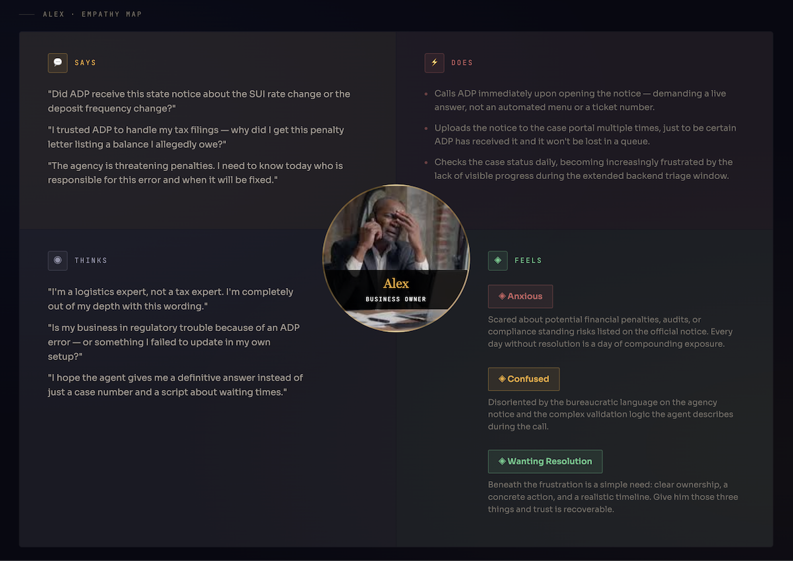

04 — Discovery & Research
Understanding the call in real time
Discovery focused on two things: mapping what associates actually did during tax notice calls, and identifying where the process broke down — not in theory, but in the specific moment of a live client interaction.
Research inputs included associate interview, stakeholder conversations, process documentation, existing workflow diagrams, Salesforce/Zone case handling patterns, SME walkthroughs, and research team intake requirements. The goal wasn't to document the full policy — it was to find the decision points that caused inconsistency.
The critical insight: most associate uncertainty clustered around the same questions. Is this ADP's period? Is the jurisdiction set up? Does the Tax ID match? Does ADP have authorization? These weren't rare edge cases — they were the standard path, and they had no in-platform support.


